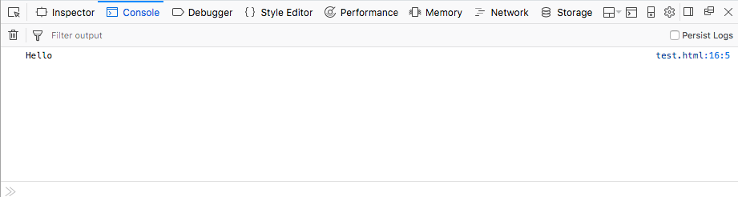

On MDN, you'll see numerous code examples inserted throughout the pages to demonstrate usage of web platform features. This article discusses the different mechanisms available for adding code examples to pages, along with which ones you should use and when.
There are four types of code example available on MDN:
We'll discuss each one in later sections.
Each type of code example has its own use cases. When should you use each one?
If you are not sure which one to use, you should default to traditional or GitHub live samples, depending on which one you are most comfortable with. You are also welcome to ask for help.
Aside from the specific system for presenting the live samples, as summarized above, there are style and content considerations to keep in mind when adding or updating samples on MDN.
By static examples, we are talking about static code blocks that show how a feature might be used in code. These are put on a page using <pre> elements, as described in Code syntax highlighting. An example result might look like this:
// This is a JS example var test = "Hello"; console.log(test);
Optionally, you might want to show a static image of the code's resulting output. For example:

Traditional live samples are inserted into the page using the EmbedLiveSample macro. An \{{EmbedLiveSample}} call dynamically grabs the code blocks in the same document section as itself and puts them into a document, which it then inserts into the page inside an {{htmlelement("iframe")}}. See our Live samples guide for more information.
GitHub live samples are inserted into the page using the EmbedGHLiveSample macro. An \{{EmbedGHLiveSample}} call dynamically grabs the document at a specified URL (which has to be inside the mdn GitHub organization), and inserts into the page inside an {{htmlelement("iframe")}}.
These work in a very similar way to Traditional live samples, but they are a lot simpler:
You don't have to worry about placement of code blocks on the page — it grabs an HTML document in a GitHub repo, and puts it in the <iframe>.
The macro only has three parameters:
https://mdn.github.io/. So this parameter needs to contain the part of the URL after that, e.g. my-subdirectory/example.html. You can omit the filename if it is called index.html.<iframe>, which can be expressed as a percentage or in pixels.<iframe>, which can be expressed as a percentage or in pixels.Let's look at an example. Say we wanted to embed the code at https://mdn.github.io/learning-area/css/styling-boxes/backgrounds/. We could use the following call:
\{{EmbedGHLiveSample("learning-area/css/styling-boxes/backgrounds/", '100%', 100)}}
This looks like so when rendered:
{{EmbedGHLiveSample("learning-area/css/styling-boxes/backgrounds/", '100%', 100)}}
The newest form of live example available on MDN is interactive live examples. These provide a step up from live examples, because the reader can edit the code and the live example updates on the fly. This is great for learning and experimentation.
The interactive examples are intended to be used at the top of MDN reference pages — we are aiming to provide these to improve their value to beginners and other readers who want to just grab and play with an example quickly before seeing all the details of whatever they are looking up. There are a few important limitations to note about the interactive examples:
If you want to submit an example, you can find out how at the interactive examples repo Contribution guide.
If you find a page that doesn't have an associated interactive example, you are welcome to contribute one!
The EmbedInteractiveExample macro is used to embed finished examples into MDN pages. For example, the macro call \{{EmbedInteractiveExample("pages/js/array-push.html")}} displays the following code example: